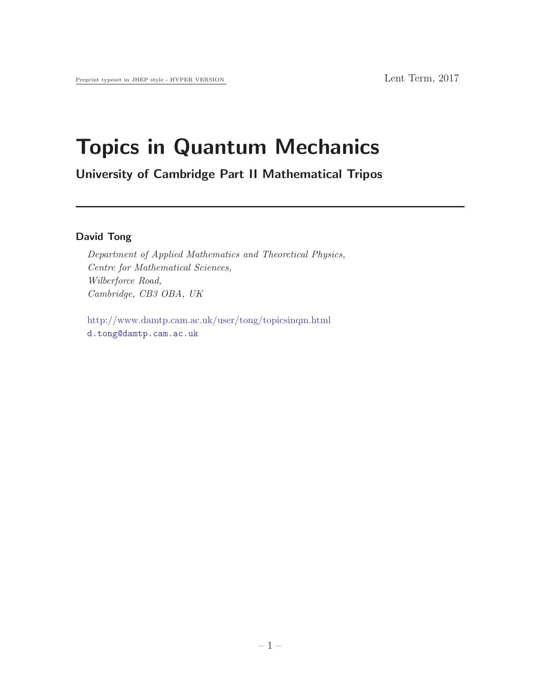

Topics in Quantum Mechanics
David Tong

0. Introduction
1. Discrete Symmetries
1.1 Parity
1.1.1 Parity as a Quantum Number
1.1.2 Intrinsic Parity
1.2 Time Reversal Invariance
1.2.1 Time Reversal is an Anti-Unitary Operator
1.2.2 An Example: Spinless Particles
1.2.3 Another Example: Spin
1.2.4 Kramers Degeneracy
2. Approximation Methods
2.1 The Variational Method
2.1.1 An Upper Bound on the Ground State
2.1.2 An Example: The Helium Atom
2.1.3 Do Bound States Exist?
2.1.4 An Upper Bound on Excited States
2.2 WKB
2.2.1 The Semi-Classical Expansion
2.2.2 A Linear Potential and the Airy Function
2.2.3 Bound State Spectrum
2.2.4 Bohr-Sommerfeld Quantization
2.2.5 Tunnelling out of a Trap
2.3 Changing Hamiltonians, Fast and Slow
2.3.1 The Sudden Approximation
2.3.2 An Example: Quantum Quench of a Harmonic Oscillator
2.3.3 The Adiabatic Approximation
2.3.4 Berry Phase
2.3.5 An Example: A Spin in a Magnetic Field
2.3.6 The Born-Oppenheimer Approximation
2.3.7 An Example: Molecules
3. Atoms
3.1 Hydrogen
3.1.1 A Review of the Hydrogen Atom
3.1.2 Relativistic Motion
3.1.3 Spin-Orbit Coupling and Thomas Precession
3.1.4 Zitterbewegung and the Darwin Term
3.1.5 Finally, Fine-Structure
3.1.6 Hyperfine Structure
3.1.7 Atoms in an Expanding Universe
3.2 Atomic Structure
3.2.1 A Closer Look at the Periodic Table
3.2.2 Helium and the Exchange Energy
3.2.3 An Instability of (Very) Large Nuclei
3.3 Self-Consistent Field Method
3.3.1 The Hartree Method
3.3.2 The Slater Determinant
3.3.3 The Hartree-Fock Method
4. Atoms in Electromagnetic Fields
4.1 The Stark Effect
4.1.1 The Linear Stark Effect
4.1.2 The Quadratic Stark Effect
4.1.3 A Little Nazi-Physics History
4.2 The Zeeman Effect
4.2.1 Strong(ish) Magnetic Fields
4.2.2 Weak Magnetic Fields
4.2.3 The Discovery of Spin
4.3 Shine a Light
4.3.1 Rabi Oscillations
4.3.2 Spontaneous Emission
4.3.3 Selection Rules
4.4 Photons
4.4.1 The Hilbert Space of Photons
4.4.2 Coherent States
4.4.3 The Jaynes-Cummings Model
5. Quantum Foundations
5.1 Entanglement
5.1.1 The Einstein, Podolsky, Rosen "Paradox"
5.1.2 Bell's Inequality
5.1.3 CHSH Inequality
5.1.4 Entanglement Between Three Particles
5.1.5 The Kochen-Specker Theorem
5.2 Entanglement is a Resource
5.2.1 The CHSH Game
5.2.2 Dense Coding
5.2.3 Quantum Teleportation
5.2.4 Quantum Key Distribution
5.3 Density Matrices
5.3.1 The Bloch Sphere
5.3.2 Entanglement Revisited
5.3.3 Entropy
5.4 Measurement
5.4.1 Projective Measurements
5.4.2 Generalized Measurements
5.4.3 The Fate of the State
5.5 Open Systems
5.5.1 Quantum Maps
5.5.2 Decoherence
5.5.3 The Lindblad Equation
6. Scattering Theory
6.1 Scattering in One Dimension
6.1.1 Reflection and Transmission Amplitudes
6.1.2 Introducing the S-Matrix
6.1.3 A Parity Basis for Scattering
6.1.4 Bound States
6.1.5 Resonances
6.2 Scattering in Three Dimensions
6.2.1 The Cross-Section
6.2.2 The Scattering Amplitude
6.2.3 Partial Waves
6.2.4 The Optical Theorem
6.2.5 An Example: A Hard Sphere and Spherical Bessel Functions
6.2.6 Bound States
6.2.7 Resonances
6.3 The Lippmann-Schwinger Equation
6.3.1 The Born Approximation
6.3.2 The Yukawa Potential and the Coulomb Potential
6.3.3 The Born Expansion
6.4 Rutherford Scattering
6.4.1 The Scattering Amplitude
6.5 Scattering Off a Lattice
6.5.1 The Bragg Condition
6.5.2 The Structure Factor
6.5.3 The Debye-Waller Factor
Back to Home